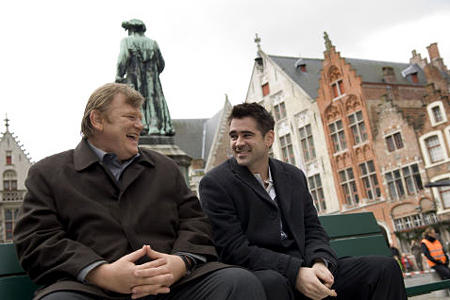

Молодой американец еврейского происхождения пытается найти женщину, которая спасла его дедушку во времена Второй мировой войны в украинской деревне. С помощью местных, которые очень слабо разговаривают на английском, сделать это будет не так уж и просто…
Вероника решает умереть
После неудавшейся попытки самоубийства Вероника оказывается в сумасшедшем доме. Когда она окончательно приходит в себя, врачи сообщают ей неутешительную новость: у нее неисправимые проблемы с сердцем и жить ей осталось не так уж и долго. Удастся ли Веронике победить болезнь и вновь обрести желание жить и любить?..
Залечь на дно в Брюгге

После того, как наемные убийцы Рэй и Кен запороли в Лондоне важное задание, их злобный шеф Гарри приказывает им отправиться в Брюгге и не высовываться. Оказавшись в старинном бельгийском городке, Рэй от нечего делать флиртует с местной красоткой, пока Кен наслаждается жизнью и неожиданным отпуском. Кажется, ничто не предвещает беду в спокойном городе…